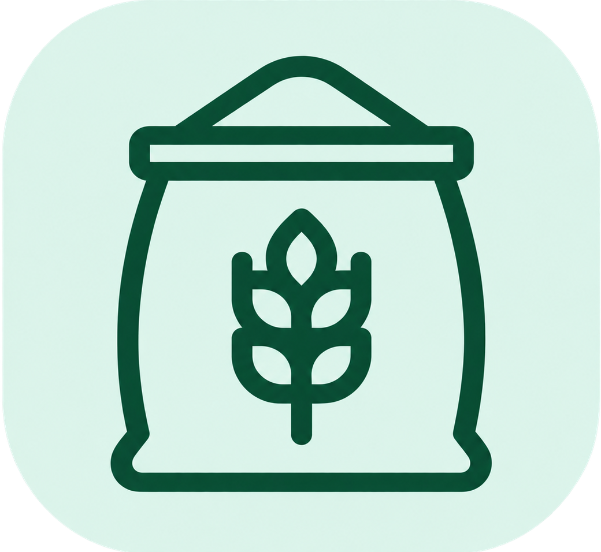

Dashboard
Acompanhe os dados atualizados do seu canavial.

Melhor índice de crescimento
Em relação ao grupo de controle

Eficiência do insumo
Em relação a média da plantação

Lucro estimado
Em relação à safra anterior

Produtividade média
Em relação à média da plantação